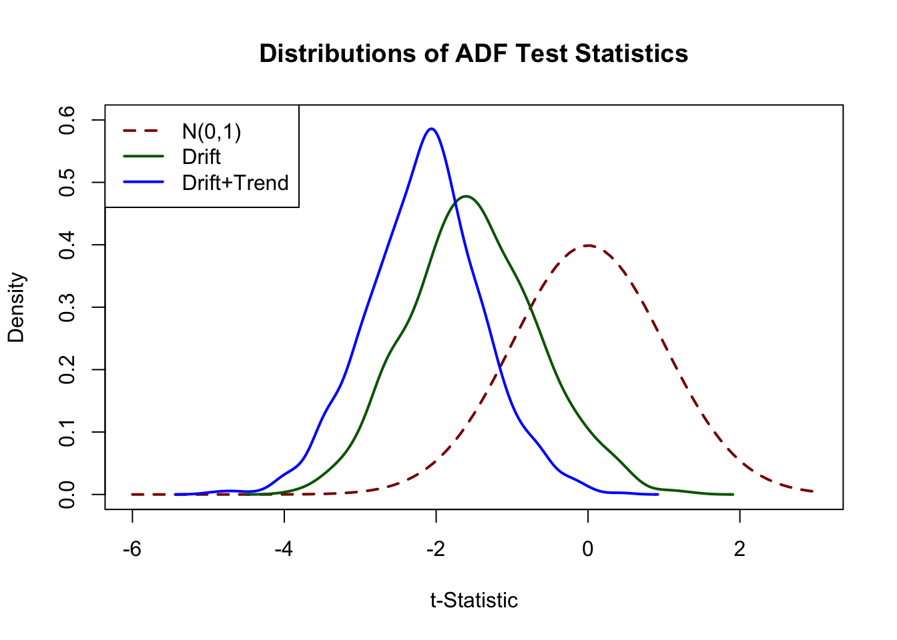

14 Introduction to Time Series Regression and Forecasting
Time series data is data is collected for a single entity over time. This is fundamentally different from cross-section data which is data on multiple entities at the same point in time. Time series data allows estimation of the effect on \(Y\) of a change in \(X\) over time. This is what econometricians call a dynamic causal effect. Let us go back to the application to cigarette consumption of Chapter 12 where we were interested in estimating the effect on cigarette demand of a price increase caused by a raise of the general sales tax. One might use time series data to assess the causal effect of a tax increase on smoking both initially and in subsequent periods.
Another application of time series data is forecasting. For example, weather services use time series data to predict tomorrow’s temperature by inter alia using today’s temperature and temperatures of the past. To motivate an economic example, central banks are interested in forecasting next month’s unemployment rates.
The remainder of Chapters in the book deals with the econometric techniques for the analysis of time series data and applications to forecasting and estimation of dynamic causal effects. This section covers the basic concepts presented in Chapter 14 of the book, explains how to visualize time series data and demonstrates how to estimate simple autoregressive models, where the regressors are past values of the dependent variable or other variables. In this context we also discuss the concept of stationarity, an important property which has far-reaching consequences.
Most empirical applications in this chapter are concerned with forecasting and use data on U.S. macroeconomic indicators or financial time series like Gross Domestic Product (GDP), the unemployment rate or excess stock returns.
The following packages and their dependencies are needed for reproduction of the code chunks presented throughout this chapter:
- AER (Christian Kleiber & Zeileis, 2017)
- dynlm (Zeileis, 2016)
- forecast (Hyndman et al., 2018)
- readxl (Wickham & Bryan, 2018)
- stargazer (Hlavac, 2018)
- scales (Wickham, 2017)
- quantmod (Ryan & Ulrich, 2018)
- urca (Pfaff, 2016)
Please verify that the following code chunk runs on your machine without any errors.
library(AER)
library(dynlm)
library(forecast)
library(readxl)
library(stargazer)
library(scales)
library(quantmod)
library(urca)14.1 Using Regression Models for Forecasting
What is the difference between estimating models for assessment of causal effects and forecasting? Consider again the simple example of estimating the casual effect of the student-teacher ratio on test scores introduced in Chapter 4.
library(AER)
data(CASchools)
CASchools$STR <- CASchools$students/CASchools$teachers
CASchools$score <- (CASchools$read + CASchools$math)/2
mod <- lm(score ~ STR, data = CASchools)
mod##
## Call:
## lm(formula = score ~ STR, data = CASchools)
##
## Coefficients:
## (Intercept) STR
## 698.93 -2.28As has been stressed in Chapter 6, the estimate of the coefficient on the student-teacher ratio does not have a causal interpretation due to omitted variable bias. However, in terms of deciding which school to send her child to, it might nevertheless be appealing for a parent to use mod for forecasting test scores in schooling districts where no public data about on scores are available.
As an example, assume that the average class in a district has \(25\) students. This is not a perfect forecast but the following one-liner might be helpful for the parent to decide.
predict(mod, newdata = data.frame("STR" = 25))## 1
## 641.9377In a time series context, the parent could use data on present and past years test scores to forecast next year’s test scores — a typical application for an autoregressive model.
14.2 Time Series Data and Serial Correlation
GDP is commonly defined as the value of goods and services produced over a given time period. The data set us_macro_quarterly.xlsx is provided by the authors and can be downloaded here. It provides quarterly data on U.S. real (i.e. inflation adjusted) GDP from 1947 to 2004.
As before, a good starting point is to plot the data. The package quantmod provides some convenient functions for plotting and computing with time series data. We also load the package readxl to read the data into R.
# attach the package 'quantmod'
library(quantmod)We begin by importing the data set.
# load US macroeconomic data
USMacroSWQ <- read_xlsx("Data/us_macro_quarterly.xlsx",
sheet = 1,
col_types = c("text", rep("numeric", 9)))
# format date column
USMacroSWQ$X__1 <- as.yearqtr(USMacroSWQ$X__1, format = "%Y:0%q")
# adjust column names
colnames(USMacroSWQ) <- c("Date", "GDPC96", "JAPAN_IP", "PCECTPI",
"GS10", "GS1", "TB3MS", "UNRATE", "EXUSUK", "CPIAUCSL")We the first column of us_macro_quarterly.xlsx contains text and the remaining ones are numeric. Using col_types = c(“text”, rep(“numeric”, 9)) we tell read_xlsx() take this into account when importing the data.
It is useful to work with time-series objects that keep track of the frequency of the data and are extensible. In what follows we will use objects of the class xts, see ?xts. Since the data in USMacroSWQ are in quarterly frequency we convert the first column to yearqtr format before generating the xts object GDP.
# GDP series as xts object
GDP <- xts(USMacroSWQ$GDPC96, USMacroSWQ$Date)["1960::2013"]
# GDP growth series as xts object
GDPGrowth <- xts(400 * log(GDP/lag(GDP)))The following code chunks reproduce Figure 14.1 of the book.
# reproduce Figure 14.1 (a) of the book
plot(log(as.zoo(GDP)),
col = "steelblue",
lwd = 2,
ylab = "Logarithm",
xlab = "Date",
main = "U.S. Quarterly Real GDP")
# reproduce Figure 14.1 (b) of the book
plot(as.zoo(GDPGrowth),
col = "steelblue",
lwd = 2,
ylab = "Logarithm",
xlab = "Date",
main = "U.S. Real GDP Growth Rates")
Notation, Lags, Differences, Logarithms and Growth Rates
For observations of a variable \(Y\) recorded over time, \(Y_t\) denotes the value observed at time \(t\). The period between two sequential observations \(Y_t\) and \(Y_{t-1}\) is a unit of time: hours, days, weeks, months, quarters, years etc. Key Concept 14.1 introduces the essential terminology and notation for time series data we use in the subsequent sections.
Key Concept 14.1
Lags, First Differences, Logarithms and Growth Rates
Previous values of a time series are called lags. The first lag of \(Y_t\) is \(Y_{t-1}\). The \(j^{th}\) lag of \(Y_t\) is \(Y_{t-j}\). In r ttcode(“R”), lags of univariate or multivariate time series objects are conveniently computed by lag(), see ?lag.
Sometimes we work with a differenced series. The first difference of a series is \(\Delta Y_{t} = Y_t - Y_{t-1}\), the difference between periods \(t\) and \(t-1\). If Y is a time series, the series of first differences is computed as diff(Y).
It may be convenient to work with the first difference in logarithms of a series. We denote this by \(\Delta \log(Y_t) = \log(Y_t) - \log(Y_{t-1})\). For a time series Y, this is obtained using log(Y/lag(Y)).
\(100 \Delta \log (Y_t)\) is an approximation for the percentage change between \(Y_t\) and \(Y_{t-1}\).
The definitions made in Key Concept 14.1 are useful because of two properties that are common to many economic time series:
Exponential growth: some economic series grow approximately exponentially such that their logarithm is approximately linear.
The standard deviation of many economic time series is approximately proportional to their level. Therefore, the standard deviation of the logarithm of such a series is approximately constant.
Furthermore, it is common to report growth rates in macroeconomic series which is why \(\log\)-differences are often used.
Table 14.1 of the book presents the quarterly U.S. GDP time series, its logarithm, the annualized growth rate and the first lag of the annualized growth rate series for the period 2012:Q1 - 2013:Q1. The following simple function can be used to compute these quantities for a quarterly time series series.
# compute logarithms, annual growth rates and 1st lag of growth rates
quants <- function(series) {
s <- series
return(
data.frame("Level" = s,
"Logarithm" = log(s),
"AnnualGrowthRate" = 400 * log(s / lag(s)),
"1stLagAnnualGrowthRate" = lag(400 * log(s / lag(s))))
)
}The annual growth rate is computed using the approximation \[Annual Growth Y_t = 400 \cdot\Delta\log(Y_t)\] since \(100\cdot\Delta\log(Y_t)\) is an approximation of the quarterly percentage changes, see Key Concept 14.1.
We call quants() on observations for the period 2011:Q3 - 2013:Q1.
# obtain a data.frame with level, logarithm, annual growth rate and its 1st lag of GDP
quants(GDP["2011-07::2013-01"])## Level Logarithm AnnualGrowthRate X1stLagAnnualGrowthRate
## 2011 Q3 15062.14 9.619940 NA NA
## 2011 Q4 15242.14 9.631819 4.7518062 NA
## 2012 Q1 15381.56 9.640925 3.6422231 4.7518062
## 2012 Q2 15427.67 9.643918 1.1972004 3.6422231
## 2012 Q3 15533.99 9.650785 2.7470216 1.1972004
## 2012 Q4 15539.63 9.651149 0.1452808 2.7470216
## 2013 Q1 15583.95 9.653997 1.1392015 0.1452808Autocorrelation
Observations of a time series are typically correlated. This type of correlation is called autocorrelation or serial correlation. Key Concept 14.2 summarizes the concepts of population autocovariance and population autocorrelation and shows how to compute their sample equivalents.
Key Concept 14.2
Autocorrelation and Autocovariance
The covariance between \(Y_t\) and its \(j^{th}\) lag, \(Y_{t-j}\), is called the \(j^{th}\) autocovariance of the series \(Y_t\). The \(j^{th}\) autocorrelation coefficient, also called the serial correlation coefficient, measures the correlation between \(Y_t\) and \(Y_{t-j}\).
We thus have \[\begin{align*} j^{th} \text{autocovariance} =& \, Cov(Y_t,Y_{t-j}), \\ j^{th} \text{autocorrelation} = \rho_j =& \, \rho_{Y_t,Y_{t-j}} = \frac{Cov(Y_t,Y_{t-j)}}{\sqrt{Var(Y_t)Var(Y_{t-j})}}. \end{align*}\]Population autocovariance and population autocorrelation can be estimated by \(\widehat{Cov(Y_t,Y_{t-j})}\), the sample autocovariance, and \(\widehat{\rho}_j\), the sample autocorrelation:
\[\begin{align*} \widehat{Cov(Y_t,Y_{t-j})} =& \, \frac{1}{T} \sum_{t=j+1}^T (Y_t - \overline{Y}_{j+1:T})(Y_{t-j} - \overline{Y}_{1:T-j}), \\ \widehat{\rho}_j =& \, \frac{\widehat{Cov(Y_t,Y_{t-j})}}{\widehat{Var(Y_t)}} \end{align*}\]\(\overline{Y}_{j+1:T}\) denotes the average of \(Y_{j+1}, Y{j+2}, \dots, Y_T\).
In R the function acf() from the package stats computes the sample autocovariance or the sample autocorrelation function.
Using acf() it is straightforward to compute the first four sample autocorrelations of the series GDPGrowth.
acf(na.omit(GDPGrowth), lag.max = 4, plot = F)##
## Autocorrelations of series 'na.omit(GDPGrowth)', by lag
##
## 0.00 0.25 0.50 0.75 1.00
## 1.000 0.352 0.273 0.114 0.106This is evidence that there is mild positive autocorrelation in the growth of GDP: if GDP grows faster than average in one period, there is a tendency for it to grow faster than average in the following periods.
Other Examples of Economic Time Series
Figure 14.2 of the book presents four plots: the U.S. unemployment rate, the U.S. Dollar / British Pound exchange rate, the logarithm of the Japanese industrial production index as well as daily changes in the Wilshire 5000 stock price index, a financial time series. The next code chunk reproduces the plots of the three macroeconomic series and adds percentage changes in the daily values of the New York Stock Exchange Composite index as a fourth one (the data set NYSESW comes with the AER package).
# define series as xts objects
USUnemp <- xts(USMacroSWQ$UNRATE, USMacroSWQ$Date)["1960::2013"]
DollarPoundFX <- xts(USMacroSWQ$EXUSUK, USMacroSWQ$Date)["1960::2013"]
JPIndProd <- xts(log(USMacroSWQ$JAPAN_IP), USMacroSWQ$Date)["1960::2013"]
# attach NYSESW data
data("NYSESW")
NYSESW <- xts(Delt(NYSESW))# divide plotting area into 2x2 matrix
par(mfrow = c(2, 2))
# plot the series
plot(as.zoo(USUnemp),
col = "steelblue",
lwd = 2,
ylab = "Percent",
xlab = "Date",
main = "US Unemployment Rate",
cex.main = 1)
plot(as.zoo(DollarPoundFX),
col = "steelblue",
lwd = 2,
ylab = "Dollar per pound",
xlab = "Date",
main = "U.S. Dollar / B. Pound Exchange Rate",
cex.main = 1)
plot(as.zoo(JPIndProd),
col = "steelblue",
lwd = 2,
ylab = "Logarithm",
xlab = "Date",
main = "Japanese Industrial Production",
cex.main = 1)
plot(as.zoo(NYSESW),
col = "steelblue",
lwd = 2,
ylab = "Percent per Day",
xlab = "Date",
main = "New York Stock Exchange Composite Index",
cex.main = 1)
The series show quite different characteristics. The unemployment rate increases during recessions and declines during economic recoveries and growth. The Dollar/Pound exchange rates shows a deterministic pattern until the end of the Bretton Woods system. Japan’s industrial production exhibits an upward trend and decreasing growth. Daily changes in the New York Stock Exchange composite index seem to fluctuate randomly around the zero line. The sample autocorrelations support this conjecture.
# compute sample autocorrelation for the NYSESW series
acf(na.omit(NYSESW), plot = F, lag.max = 10)##
## Autocorrelations of series 'na.omit(NYSESW)', by lag
##
## 0 1 2 3 4 5 6 7 8 9
## 1.000 0.040 -0.016 -0.023 0.000 -0.036 -0.027 -0.059 0.013 0.017
## 10
## 0.004The first 10 sample autocorrelation coefficients are very close to zero. The default plot generated by acf() provides further evidence.
# plot sample autocorrelation for the NYSESW series
acf(na.omit(NYSESW), main = "Sample Autocorrelation for NYSESW Data")
The blue dashed bands represent values beyond which the autocorrelations are significantly different from zero at \(5\%\) level. Even when the true autocorrelations are zero, we need to expect a few exceedences — recall the definition of a type-I-error from Key Concept 3.5. For most lags we see that the sample autocorrelation does not exceed the bands and there are only a few cases that lie marginally beyond the limits.
Furthermore, the NYSESW series exhibits what econometricians call volatility clustering: there are periods of high and periods of low variance. This is common for many financial time series.
14.3 Autoregressions
Autoregressive models are heavily used in economic forecasting. An autoregressive model relates a time series variable to its past values. This section discusses the basic ideas of autoregressions models, shows how they are estimated and discusses an application to forecasting GDP growth using R.
The First-Order Autoregressive Model
It is intuitive that the immediate past of a variable should have power to predict its near future. The simplest autoregressive model uses only the most recent outcome of the time series observed to predict future values. For a time series \(Y_t\) such a model is called a first-order autoregressive model, often abbreviated AR(1), where the 1 indicates that the order of autoregression is one: \[\begin{align*} Y_t = \beta_0 + \beta_1 Y_{t-1} + u_t \end{align*}\]is the AR(1) population model of a time series \(Y_t\).
For the GDP growth series, an autoregressive model of order one uses only the information on GDP growth observed in the last quarter to predict a future growth rate. The first-order autoregression model of GDP growth can be estimated by computing OLS estimates in the regression of \(GDPGR_t\) on \(GDPGR_{t-1}\), \[\begin{align} \widehat{GDPGR}_t = \hat\beta_0 + \hat\beta_1 GDPGR_{t-1}. \tag{14.1} \end{align}\]Following the book we use data from 1962 to 2012 to estimate (14.1). This is easily done with the function ar.ols() from the package stats.
# subset data
GDPGRSub <- GDPGrowth["1962::2012"]
# estimate the model
ar.ols(GDPGRSub,
order.max = 1,
demean = F,
intercept = T)##
## Call:
## ar.ols(x = GDPGRSub, order.max = 1, demean = F, intercept = T)
##
## Coefficients:
## 1
## 0.3384
##
## Intercept: 1.995 (0.2993)
##
## Order selected 1 sigma^2 estimated as 9.886We can check that the computations done by ar.ols() are the same as done by lm().
# length of data set
N <-length(GDPGRSub)
GDPGR_level <- as.numeric(GDPGRSub[-1])
GDPGR_lags <- as.numeric(GDPGRSub[-N])
# estimate the model
armod <- lm(GDPGR_level ~ GDPGR_lags)
armod##
## Call:
## lm(formula = GDPGR_level ~ GDPGR_lags)
##
## Coefficients:
## (Intercept) GDPGR_lags
## 1.9950 0.3384As usual, we may use coeftest() to obtain a robust summary on the estimated regression coefficients.
# robust summary
coeftest(armod, vcov. = vcovHC, type = "HC1")##
## t test of coefficients:
##
## Estimate Std. Error t value Pr(>|t|)
## (Intercept) 1.994986 0.351274 5.6793 4.691e-08 ***
## GDPGR_lags 0.338436 0.076188 4.4421 1.470e-05 ***
## ---
## Signif. codes: 0 '***' 0.001 '**' 0.01 '*' 0.05 '.' 0.1 ' ' 1We omit the first observation for \(GDPGR_{1962 \ Q1}\) from the vector of the dependent variable since \(GDPGR_{1962 \ Q1 - 1} = GDPGR_{1961 \ Q4}\), is not included in the sample. Similarly, the last observation, \(GDPGR_{2012 \ Q4}\), is excluded from the predictor vector since the data does not include \(GDPGR_{2012 \ Q4 + 1} = GDPGR_{2013 \ Q1}\). Put differently, when estimating the model, one observation is lost because of the time series structure of the data.
Forecasts and Forecast Errors
Suppose \(Y_t\) follows an AR(1) model with an intercept and that you have an OLS estimate of the model on the basis of observations for \(T\) periods. Then you may use the AR(1) model to obtain \(\widehat{Y}_{T+1\vert T}\), a forecast for \(Y_{T+1}\) using data up to period \(T\) where \[\begin{align*} \widehat{Y}_{T+1\vert T} = \hat{\beta}_0 + \hat{\beta}_1 Y_T. \end{align*}\] The forecast error is \[\begin{align*} \text{Forecast error} = Y_{T+1} - \widehat{Y}_{T+1\vert T}. \end{align*}\]Forecasts and Predicted Values
Forecasted values of \(Y_t\) are not what we refer to as OLS predicted values of \(Y_t\). Also, the forecast error is not an OLS residual. Forecasts and forecast errors are obtained using out-of-sample values while predicted values and residuals are computed for in-sample values that were actually observed and used in estimating the model.
The root mean squared forecast error (RMSFE) measures the typical size of the forecast error and is defined as \[\begin{align*} RMSFE = \sqrt{E\left[\left(Y_{T+1} - \widehat{Y}_{T+1\vert T}\right)^2\right]}. \end{align*}\]The \(RMSFE\) is composed of the future errors \(u_t\) and the error made when estimating the coefficients. When the sample size is large, the former may be much larger than the latter so that \(RMSFE \approx \sqrt{Var()u_t}\) which can be estimated by the standard error of the regression.
Application to GDP Growth
Using (14.2), the estimated AR(1) model of GDP growth, we perform the forecast for GDP growth for 2013:Q1 (remember that the model was estimated using data for periods 1962:Q1 - 2012:Q4, so 2013:Q1 is an out-of-sample period). Plugging \(GDPGR_{2012:Q4} \approx 0.15\) into (14.2),
\[\begin{align*} \widehat{GDPGR}_{2013:Q1} = 1.995 + 0.348 \cdot 0.15 = 2.047. \end{align*}\]The function forecast() from the forecast package has some useful features for forecasting time series data.
library(forecast)
# assign GDP growth rate in 2012:Q4
new <- data.frame("GDPGR_lags" = GDPGR_level[N-1])
# forecast GDP growth rate in 2013:Q1
forecast(armod, newdata = new)## Point Forecast Lo 80 Hi 80 Lo 95 Hi 95
## 1 2.044155 -2.036225 6.124534 -4.213414 8.301723Using forecast()produces the same point forecast of about 2.0, along with \(80\%\) and \(95\%\) forecast intervals, see section 14.5. We conclude that our AR(1) model forecasts GDP growth to be \(2\%\) in 2013:Q1.
How accurate is this forecast? The forecast error is quite large: \(GDPGR_{2013:Q1} \approx 1.1\%\) while our forecast is \(2\%\). Second, by calling summary(armod) shows that the model explains only little of the variation in the growth rate of GDP and the \(SER\) is about \(3.16\). Leaving aside forecast uncertainty due to estimation of the model coefficients \(\beta_0\) and \(\beta_1\), the \(RMSFE\) must be at least \(3.16\%\), the estimate of the standard deviation of the errors. We conclude that this forecast is pretty inaccurate.
# compute the forecast error
forecast(armod, newdata = new)$mean - GDPGrowth["2013"][1]## x
## 2013 Q1 0.9049532# R^2
summary(armod)$r.squared## [1] 0.1149576# SER
summary(armod)$sigma## [1] 3.15979Autoregressive Models of Order \(p\)
For forecasting GDP growth, the AR(\(1\)) model (14.2) disregards any information in the past of the series that is more distant than one period. An AR(\(p\)) model incorporates the information of \(p\) lags of the series. The idea is explained in Key Concept 14.3.
Key Concept 14.3
Autoregressions
An AR(\(p\)) model assumes that a time series \(Y_t\) can be modeld by a linear function of the first \(p\) of its lagged values. \[\begin{align*} Y_t = \beta_0 + \beta_1 Y_{t-1} + \beta_2 Y_{t-2} + \dots + \beta_p Y_{t-p} + u_t \end{align*}\] is an autoregressive model of order \(p\) where \(E(u_t\vert Y_{t-1}, Y_{t-2}, \dots,Y_{t-p})=0\).
Following the book, we estimate an AR(\(2\)) model of the GDP growth series from 1962:Q1 to 2012:Q4.
# estimate the AR(2) model
GDPGR_AR2 <- dynlm(ts(GDPGR_level) ~ L(ts(GDPGR_level)) + L(ts(GDPGR_level), 2))
coeftest(GDPGR_AR2, vcov. = sandwich)##
## t test of coefficients:
##
## Estimate Std. Error t value Pr(>|t|)
## (Intercept) 1.631747 0.402023 4.0588 7.096e-05 ***
## L(ts(GDPGR_level)) 0.277787 0.079250 3.5052 0.0005643 ***
## L(ts(GDPGR_level), 2) 0.179269 0.079951 2.2422 0.0260560 *
## ---
## Signif. codes: 0 '***' 0.001 '**' 0.01 '*' 0.05 '.' 0.1 ' ' 1We see that the coefficient on the second lag is significantly different from zero. The fit improves slightly: \(\bar{R}^2\) grows from \(0.11\) for the AR(\(1\)) model to about \(0.14\) and the \(SER\) reduces to \(3.13\).
# R^2
summary(GDPGR_AR2)$r.squared## [1] 0.1425484# SER
summary(GDPGR_AR2)$sigma## [1] 3.132122We may use the AR(\(2\)) model to obtain a forecast for GDP growth in 2013:Q1 in the same manner as for the AR(1) model.
# AR(2) forecast of GDP growth in 2013:Q1
forecast <- c("2013:Q1" = coef(GDPGR_AR2) %*% c(1, GDPGR_level[N-1], GDPGR_level[N-2]))This leads to a forecast error of roughly \(-1\%\).
# compute AR(2) forecast error
GDPGrowth["2013"][1] - forecast## x
## 2013 Q1 -1.02535814.4 Can You Beat the Market? (Part I)
The theory of efficient capital markets states that stock prices embody all currently available information. If this hypothesis holds, it should not be possible to estimate a useful model for forecasting future stock returns using publicly available information on past returns (this is also referred to as the weak-form efficiency hypothesis): if it was possible to forecast the market, traders would be able to arbitrage, e.g., by relying on an AR(\(2\)) model, they would use information that is not already priced-in which would push prices until the expected return is zero.
This idea is presented in the box Can You Beat the Market? (Part I) on p. 582 of the book. This section reproduces the estimation results.
We start by importing monthly data from 1931:1 to 2002:12 on excess returns of a broad-based index of stock prices, the CRSP value-weighted index. The data are provided by the authors of the book as an excel sheet which can be downloaded here.
# read in data on stock returns
SReturns <- read_xlsx("Data/Stock_Returns_1931_2002.xlsx",
sheet = 1,
col_types = "numeric")We continue by converting the data to an object of class ts.
# convert to ts object
StockReturns <- ts(SReturns[, 3:4],
start = c(1931, 1),
end = c(2002, 12),
frequency = 12)Next, we estimate AR(\(1\)), AR(\(2\)) and AR(\(4\)) models of excess returns for the time period 1960:1 to 2002:12.
# estimate AR models:
# AR(1)
SR_AR1 <- dynlm(ExReturn ~ L(ExReturn),
data = StockReturns, start = c(1960, 1), end = c(2002, 12))
# AR(2)
SR_AR2 <- dynlm(ExReturn ~ L(ExReturn) + L(ExReturn, 2),
data = StockReturns, start = c(1960, 1), end = c(2002, 12))
# AR(4)
SR_AR4 <- dynlm(ExReturn ~ L(ExReturn) + L(ExReturn, 1:4),
data = StockReturns, start = c(1960, 1), end = c(2002, 12))After computing robust standard errors, we gather the results in a table generated by stargazer().
# compute robust standard errors
rob_se <- list(sqrt(diag(sandwich(SR_AR1))),
sqrt(diag(sandwich(SR_AR2))),
sqrt(diag(sandwich(SR_AR4))))# generate table using 'stargazer()'
stargazer(SR_AR1, SR_AR2, SR_AR4,
title = "Autoregressive Models of Monthly Excess Stock Returns",
header = FALSE,
model.numbers = F,
omit.table.layout = "n",
digits = 3,
column.labels = c("AR(1)", "AR(2)", "AR(4)"),
dep.var.caption = "Dependent Variable: Excess Returns on the CSRP Value-Weighted Index",
dep.var.labels.include = FALSE,
covariate.labels = c("$excess return_{t-1}$", "$excess return_{t-2}$",
"$excess return_{t-3}$", "$excess return_{t-4}$",
"Intercept"),
se = rob_se,
omit.stat = "rsq") | Dependent Variable: Excess returns on the CSRP Value-Weighted Index | |||
| AR(1) | AR(2) | AR(4) | |
| excess returnt-1 | 0.050 | 0.053 | 0.054 |
| (0.051) | (0.051) | (0.051) | |
| excess returnt-2 | -0.053 | ||
| (0.048) | |||
| excess returnt-3 | |||
| excess returnt-4 | -0.054 | ||
| (0.048) | |||
| Intercept | 0.009 | ||
| (0.050) | |||
| L(ExReturn, 1:4)4 | -0.016 | ||
| (0.047) | |||
| Constant | 0.312 | 0.328* | 0.331 |
| (0.197) | (0.199) | (0.202) | |
| Observations | 516 | 516 | 516 |
| Adjusted R2 | 0.001 | 0.001 | -0.002 |
| Residual Std. Error | 4.334 (df = 514) | 4.332 (df = 513) | 4.340 (df = 511) |
| F Statistic | 1.306 (df = 1; 514) | 1.367 (df = 2; 513) | 0.721 (df = 4; 511) |
Table 14.1: Autoregressive Models of Monthly Excess Stock Returns
The results are consistent with the hypothesis of efficient financial markets: there are no statistically significant coefficients in any of the estimated models and the hypotheses that all coefficients are zero cannot be rejected. \(\bar{R}^2\) is almost zero in all models and even negative for the AR(\(4\)) model. This suggests that none of the models are useful for forecasting stock returns.
14.5 Additional Predictors and The ADL Model
Instead of only using the dependent variable’s lags as predictors, an autoregressive distributed lag (ADL) model also uses lags of other variables for forecasting. The general ADL model is summarized in Key Concept 14.4:
Key Concept 14.4
The Autoregressive Distributed Lag Model
An ADL(\(p\),\(q\)) model assumes that a time series \(Y_t\) can be represented by a linear function of \(p\) of its lagged values and \(q\) lags of another time series \(X_t\): \[\begin{align*} Y_t =& \, \beta_0 + \beta_1 Y_{t-1} + \beta_2 Y_{t-2} + \dots + \beta_p Y_{t-p} \\ &+ \, \delta_1 X_{t-1} + \delta_2 X_{t-2} + \dots + \delta_q X_{t-q} X_{t-q} + u_t. \end{align*}\] is an autoregressive distributed lag model with \(p\) lags of \(Y_t\) and \(q\) lags of \(X_t\) where \[E(u_t\vert Y_{t-1}, Y_{t-2}, \dots, X_{t-1}, X_{t-2}, \dots)=0.\]
Forecasting GDP Growth Using the Term Spread
Interest rates on long-term and short term treasury bonds are closely linked to macroeconomic conditions. While interest rates on both types of bonds have the same long-run tendencies, they behave quite differently in the short run. The difference in interest rates of two bonds with distinct maturity is called the term spread.
The following code chunks reproduce Figure 14.3 of the book which displays interest rates of 10-year U.S. Treasury bonds and 3-months U.S. Treasury bills from 1960 to 2012.
# 3-months Treasury bills interest rate
TB3MS <- xts(USMacroSWQ$TB3MS, USMacroSWQ$Date)["1960::2012"]
# 10-years Treasury bonds interest rate
TB10YS <- xts(USMacroSWQ$GS10, USMacroSWQ$Date)["1960::2012"]
# term spread
TSpread <- TB10YS - TB3MS# reproduce Figure 14.2 (a) of the book
plot(merge(as.zoo(TB3MS), as.zoo(TB10YS)),
plot.type = "single",
col = c("darkred", "steelblue"),
lwd = 2,
xlab = "Date",
ylab = "Percent per annum",
main = "Interest Rates")
# define function that transform years to class 'yearqtr'
YToYQTR <- function(years) {
return(
sort(as.yearqtr(sapply(years, paste, c("Q1", "Q2", "Q3", "Q4"))))
)
}
# recessions
recessions <- YToYQTR(c(1961:1962, 1970, 1974:1975, 1980:1982, 1990:1991, 2001, 2007:2008))
# add color shading for recessions
xblocks(time(as.zoo(TB3MS)),
c(time(TB3MS) %in% recessions),
col = alpha("steelblue", alpha = 0.3))
# add a legend
legend("topright",
legend = c("TB3MS", "TB10YS"),
col = c("darkred", "steelblue"),
lwd = c(2, 2))
# reproduce Figure 14.2 (b) of the book
plot(as.zoo(TSpread),
col = "steelblue",
lwd = 2,
xlab = "Date",
ylab = "Percent per annum",
main = "Term Spread")
# add color shading for recessions
xblocks(time(as.zoo(TB3MS)),
c(time(TB3MS) %in% recessions),
col = alpha("steelblue", alpha = 0.3))
Before recessions, the gap between interest rates on long-term bonds and short term bills narrows and consequently the term spread declines drastically towards zero or even becomes negative in times of economic stress. This information might be used to improve GDP growth forecasts of future.
We check this by estimating an ADL(\(2\), \(1\)) model and an ADL(\(2\), \(2\)) model of the GDP growth rate using lags of GDP growth and lags of the term spread as regressors. We then use both models for forecasting GDP growth in 2013:Q1.
# convert growth and spread series to ts objects
GDPGrowth_ts <- ts(GDPGrowth,
start = c(1960, 1),
end = c(2013, 4),
frequency = 4)
TSpread_ts <- ts(TSpread,
start = c(1960, 1),
end = c(2012, 4),
frequency = 4)
# join both ts objects
ADLdata <- ts.union(GDPGrowth_ts, TSpread_ts)# estimate the ADL(2,1) model of GDP growth
GDPGR_ADL21 <- dynlm(GDPGrowth_ts ~ L(GDPGrowth_ts) + L(GDPGrowth_ts, 2) + L(TSpread_ts),
start = c(1962, 1), end = c(2012, 4))
coeftest(GDPGR_ADL21, vcov. = sandwich)##
## t test of coefficients:
##
## Estimate Std. Error t value Pr(>|t|)
## (Intercept) 0.954990 0.486976 1.9611 0.051260 .
## L(GDPGrowth_ts) 0.267729 0.082562 3.2428 0.001387 **
## L(GDPGrowth_ts, 2) 0.192370 0.077683 2.4763 0.014104 *
## L(TSpread_ts) 0.444047 0.182637 2.4313 0.015925 *
## ---
## Signif. codes: 0 '***' 0.001 '**' 0.01 '*' 0.05 '.' 0.1 ' ' 1All coefficients are significant at the level of \(5\%\).
# 2012:Q3 / 2012:Q4 data on GDP growth and term spread
subset <- window(ADLdata, c(2012, 3), c(2012, 4))
# ADL(2,1) GDP growth forecast for 2013:Q1
ADL21_forecast <- coef(GDPGR_ADL21) %*% c(1, subset[2, 1], subset[1, 1], subset[2, 2])
ADL21_forecast## [,1]
## [1,] 2.241689# compute the forecast error
window(GDPGrowth_ts, c(2013, 1), c(2013, 1)) - ADL21_forecast## Qtr1
## 2013 -1.102487Model (14.4) predicts the GDP growth in 2013:Q1 to be \(2.24\%\) which leads to a forecast error of \(-1.10\%\).
We estimate the ADL(\(2\),\(2\)) specification to see whether adding additional information on past term spread improves the forecast.
# estimate the ADL(2,2) model of GDP growth
GDPGR_ADL22 <- dynlm(GDPGrowth_ts ~ L(GDPGrowth_ts) + L(GDPGrowth_ts, 2)
+ L(TSpread_ts) + L(TSpread_ts, 2),
start = c(1962, 1), end = c(2012, 4))
coeftest(GDPGR_ADL22, vcov. = sandwich)##
## t test of coefficients:
##
## Estimate Std. Error t value Pr(>|t|)
## (Intercept) 0.967967 0.472470 2.0487 0.041800 *
## L(GDPGrowth_ts) 0.243175 0.077836 3.1242 0.002049 **
## L(GDPGrowth_ts, 2) 0.177070 0.077027 2.2988 0.022555 *
## L(TSpread_ts) -0.139554 0.422162 -0.3306 0.741317
## L(TSpread_ts, 2) 0.656347 0.429802 1.5271 0.128326
## ---
## Signif. codes: 0 '***' 0.001 '**' 0.01 '*' 0.05 '.' 0.1 ' ' 1The coefficients on both lags of the term spread are not significant at the \(10\%\) level.
# ADL(2,2) GDP growth forecast for 2013:Q1
ADL22_forecast <- coef(GDPGR_ADL22) %*% c(1, subset[2, 1], subset[1, 1], subset[2, 2], subset[1, 2])
ADL22_forecast## [,1]
## [1,] 2.274407# compute the forecast error
window(GDPGrowth_ts, c(2013, 1), c(2013, 1)) - ADL22_forecast## Qtr1
## 2013 -1.135206The ADL(\(2\),\(2\)) forecast of GDP growth in 2013:Q1 is \(2.27\%\) which implies a forecast error of \(1.14\%\).
Do the ADL models (14.4) and (14.5) improve upon the simple AR(\(2\)) model (14.3)? The answer is yes: while \(SER\) and \(\bar{R}^2\) improve only slightly, an \(F\)-test on the term spread coefficients in (14.5) provides evidence that the model does better in explaining GDP growth than the AR(\(2\)) model as the hypothesis that both coefficients are zero cannot be rejected at the level of \(5\%\).
# compare adj. R2
c("Adj.R2 AR(2)" = summary(GDPGR_AR2)$r.squared,
"Adj.R2 ADL(2,1)" = summary(GDPGR_ADL21)$r.squared,
"Adj.R2 ADL(2,2)" = summary(GDPGR_ADL22)$r.squared)## Adj.R2 AR(2) Adj.R2 ADL(2,1) Adj.R2 ADL(2,2)
## 0.1425484 0.1743996 0.1855245# compare SER
c("SER AR(2)" = summary(GDPGR_AR2)$sigma,
"SER ADL(2,1)" = summary(GDPGR_ADL21)$sigma,
"SER ADL(2,2)" = summary(GDPGR_ADL22)$sigma)## SER AR(2) SER ADL(2,1) SER ADL(2,2)
## 3.132122 3.070760 3.057655# F-test on coefficients of term spread
linearHypothesis(GDPGR_ADL22,
c("L(TSpread_ts)=0", "L(TSpread_ts, 2)=0"),
vcov. = sandwich)## Linear hypothesis test
##
## Hypothesis:
## L(TSpread_ts) = 0
## L(TSpread_ts, 2) = 0
##
## Model 1: restricted model
## Model 2: GDPGrowth_ts ~ L(GDPGrowth_ts) + L(GDPGrowth_ts, 2) + L(TSpread_ts) +
## L(TSpread_ts, 2)
##
## Note: Coefficient covariance matrix supplied.
##
## Res.Df Df F Pr(>F)
## 1 201
## 2 199 2 4.4344 0.01306 *
## ---
## Signif. codes: 0 '***' 0.001 '**' 0.01 '*' 0.05 '.' 0.1 ' ' 1Stationarity
In general, forecasts can be improved by using multiple predictors — just as in cross-sectional regression. When constructing time series models one should take into account whether the variables are stationary or nonstationary. Key Concept 14.5 explains what stationarity is.
Key Concept 14.5
Stationarity
A time series \(Y_t\) is stationary if its probability distribution is time independent, that is the joint distribution of \(Y_{s+1}, Y_{s+2},\dots,Y_{s+T}\) does not change as \(s\) is varied, regardless of \(T\).
Similarly, two time series \(X_t\) and \(Y_t\) are jointly stationary if the joint distribution of \((X_{s+1},Y_{s+1}, X_{s+2},Y_{s+2} \dots, X_{s+T},Y_{s+T})\) does not depend on \(s\), regardless of \(T\).
Stationarity makes it easier to learn about the characteristics of past data.
Time Series Regression with Multiple Predictors
The concept of stationarity is a key assumption in the general time series regression model with multiple predictors. Key Concept 14.6 lays out this model and its assumptions.
Key Concept 14.6
Time Series Regression with Multiple Predictors
The general time series regression model extends the ADL model such that multiple regressors and their lags are included. It uses \(p\) lags of the dependent variable and \(q_l\) lags of \(l\) additional predictors where \(l=1,\dots,k\):
\[\begin{equation} \begin{aligned} Y_t =& \beta_0 + \beta_1 Y_{t-1} + \beta_2 Y_{t-2} + \dots + \beta_{p} Y_{t-p} \\ &+ \delta_{11} X_{1,t-1} + \delta_{12} X_{1,t-2} + \dots + \delta_{1q} X_{1,t-q} \\ &+ \dots \\ &+ \delta_{k1} X_{k,t-1} + \delta_{k2} X_{k,t-2} + \dots + \delta_{kq} X_{k,t-q} \\ &+ u_t \end{aligned} \end{equation}\]For estimation we make the following assumptions:
The error term \(u_t\) has conditional mean zero given all regressors and their lags: \[E(u_t\vert Y_{t-1}, Y_{t-2}, \dots, X_{1,t-1}, X_{1,t-2} \dots, X_{k,t-1}, X_{k,t-2}, \dots)\] This assumption is an extension of the conditional mean zero assumption used for AR and ADL models and guarantees that the general time series regression model stated above gives the best forecast of \(Y_t\) given its lags, the additional regressors \(X_{1,t},\dots,X_{k,t}\) and their lags.
The i.i.d. assumption for cross-sectional data is not (entirely) meaningful for time series data. We replace it by the following assumption witch consists of two parts:
The \((Y_{t}, X_{1,t}, \dots, X_{k,t})\) have a stationary distribution (the “identically distributed” part of the i.i.d. assumption for cross-setional data). If this does not hold, forecasts may be biased and inference can be strongly misleading.
\((Y_{t}, X_{1,t}, \dots, X_{k,t})\) and \((Y_{t-j}, X_{1,t-j}, \dots, X_{k,t-j})\) become independent as \(j\) gets large (the “idependently” distributed part of the i.i.d. assumption for cross-sectional data). This assumption is also called weak dependence. It ensures that the WLLN and the CLT hold in large samples.
Large outliers are unlikely: \(E(X_{1,t}^4), E(X_{2,t}^4), \dots, E(X_{k,t}^4)\) and \(E(Y_t^4)\) have nonzero, finite fourth moments.
No perfect multicollinearity.
Since many economic time series appear to be nonstationary, assumption two of Key Concept 14.6 is a crucial one in applied macroeconomics and finance which is why statistical test for stationarity or nonstationarity have been developed. Chapters 14.6 and 14.7 are devoted to this topic.
Statistical inference and the Granger causality test
If a \(X\) is a useful predictor for \(Y\), in a regression of \(Y_t\) on lags of its own and lags of \(X_t\), not all of the coefficients on the lags on \(X_t\) are zero. This concept is called Granger causality and is an interesting hypothesis to test. Key Concept 14.7 summarizes the idea.
Key Concept 14.7
Granger Causality Tests
The Granger causality test C. Granger (1969) is an \(F\) test of the null hypothesis that all lags of a variable \(X\) included in a time series regression model do not have predictive power for \(Y_t\). The Granger causality test does not test whether \(X\) actually causes \(Y\) but whether the included lags are informative in terms of predicting \(Y\).
We have already performed a Granger causality test on the coefficients of term spread in (14.5), the ADL(\(2\),\(2\)) model of GDP growth and concluded that at least one of the first two lags of term spread has predictive power for GDP growth.
Forecast Uncertainty and Forecast Intervals
In general, it is good practice to report a measure of the uncertainty when presenting results that are affected by the latter. Uncertainty is particularly of interest when forecasting a time series. For example, consider a simple ADL\((1,1)\) model \[\begin{align*} Y_t = \beta_0 + \beta_1 Y_{t-1} + \delta_1 X_{t-1} + u_t \end{align*}\] where \(u_t\) is a homoskedastic error term. The forecast error is \[\begin{align*} Y_{T+1} - \widehat{Y}_{T+1\vert T} = u_{T+1} - \left[(\widehat{\beta}_0 - \beta_0) + (\widehat{\beta}_1 - \beta_1) Y_T + (\widehat{\delta_1} - \delta_1) X_T \right]. \end{align*}\] The mean squared forecast error (MSFE) and the RMFSE are \[\begin{align*} MFSE =& \, E\left[(Y_{T+1} - \widehat{Y}_{T+1\vert T})^2 \right] \\ =& \, \sigma_u^2 + Var\left[ (\widehat{\beta}_0 - \beta_0) + (\widehat{\beta}_1 - \beta_1) Y_T + (\widehat{\delta_1} - \delta_1) X_T \right], \\ RMFSE =& \, \sqrt{\sigma_u^2 + Var\left[ (\widehat{\beta}_0 - \beta_0) + (\widehat{\beta}_1 - \beta_1) Y_T + (\widehat{\delta_1} - \delta_1) X_T \right]}. \end{align*}\] A \(95\%\) forecast interval is an interval that covers the true value of \(Y_{T+1}\) in \(95\%\) of repeated applications. There is a major difference in computing a confidence interval and a forecast interval: when computing a confidence interval of a point estimate we use large sample approximations that are justified by the CLT and thus are valid for a large range of error term distributions. For computation of a forecast interval of \(Y_{T+1}\), however, we must make an additional assumption about the distribution of \(u_{T+1}\), the error term in period \(T+1\). Assuming that \(u_{T+1}\) is normally distributed one can construct a \(95\%\) forecast interval for \(Y_{T+1}\) using \(SE(Y_{T+1} - \widehat{Y}_{T+1\vert T})\), an estimate of the RMSFE: \[\begin{align*} \widehat{Y}_{T+1\vert T} \pm 1.96 \cdot SE(Y_{T+1} - \widehat{Y}_{T+1\vert T}) \end{align*}\]Of course, the computation gets more complicated when the error term is heteroskedastic or if we are interested in computing a forecast interval for \(T+s, s>1\).
In some applications it is useful to report multiple forecast intervals for subsequent periods, see the box The River of Blood on p. 592 of the book. These can be visualized in a so-called fan chart. We will not replicate the fan chart presented in Figure 14.2 of book because the underlying model is by far more complex than the simple AR and ADL models treated here. Instead, in the example below we use simulated time series data and estimate an AR(\(2\)) model which is then used for forecasting the subsequent \(25\) future outcomes of the series.
# set seed
set.seed(1234)
# simulate the time series
Y <- arima.sim(list(order = c(2, 0, 0), ar = c(0.2, 0.2)), n = 200)
# estimate an AR(2) model using 'arima()', see ?arima
model <- arima(Y, order = c(2, 0, 0))
# compute points forecasts and prediction intervals for the next 25 periods
fc <- forecast(model, h = 25, level = seq(5, 99, 10))
# plot a fan chart
plot(fc,
main = "Forecast Fan Chart for AR(2) Model of Simulated Data",
showgap = F,
fcol = "red",
flty = 2)
arima.sim() simulates autoregressive integrated moving average (ARIMA) models. AR models belong to this class of models. We use list(order = c(2, 0, 0), ar = c(0.2, 0.2)) so the DGP is \[Y_t = 0.2 Y_{t-1} + 0.2 Y_{t-2} + u_t.\]
We choose level = seq(5, 99, 10) in the call of forecast() such that forecast intervals with levels \(5\%, 15\%, \dots, 95\%\) are computed for each point forecast of the series.
The dashed red line shows point forecasts of the series for the next 25 periods based on an \(ADL(1,1)\) model and the shaded areas represent the prediction intervals. The degree of shading indicates the level of the prediction interval. The darkest of the blue bands displays the \(5\%\) forecast intervals and the color fades towards grey as the level of the intervals increases.
14.6 Lag Length Selection Using Information Criteria
The selection of lag lengths in AR and ADL models can sometimes be guided by economic theory. However, there are statistical methods that are helpful to determine how many lags should be included as regressors. In general, too many lags inflate the standard errors of coefficient estimates and thus imply an increase in the forecast error while omitting lags that should be included in the model may result in an estimation bias.
The order of an AR model can be determined using two approaches:
The F-test approach
Estimate an AR(\(p\)) model and test the significance of the largest lag(s). If the test rejects, drop the respective lag(s) from the model. This approach has the tendency to produce models where the order is too large: in a significance test we always face the risk of rejecting a true null hypothesis!
Relying on an information criterion
To circumvent the issue of producing too large models, one may choose the lag order that minimizes one of the following two information criteria:
The Bayes information criterion (BIC):
\[BIC(p) = \log\left(\frac{SSR(p)}{T}\right) + (p + 1) \frac{\log(T)}{T}\]
The Akaike information criterion (AIC):
\[AIC(p) = \log\left(\frac{SSR(p)}{T}\right) + (p + 1) \frac{2}{T}\]
Both criteria are estimators of the optimal lag length \(p\). The lag order \(\widehat{p}\) that minimizes the respective criterion is called the BIC estimate or the AIC estimate of the optimal model order. The basic idea of both criteria is that the \(SSR\) decreases as additional lags are added to the model such that the first term decreases whereas the second increases as the lag order grows. One can show that the the \(BIC\) is a consistent estimator of the true lag order while the AIC is not which is due to the differing factors in the second addend. Nevertheless, both estimators are used in practice where the \(AIC\) is sometimes used as an alternative when the \(BIC\) yields a model with “too few” lags.
The function dynlm() does not compute information criteria by default. We will therefore write a short function that reports the \(BIC\) (along with the chosen lag order \(p\) and \(R^2\)) for objects of class dynlm.
# compute BIC for AR model objects of class 'dynlm'
BIC <- function(model) {
ssr <- sum(model$residuals^2)
t <- length(model$residuals)
npar <- length(model$coef)
return(
round(c("p" = npar - 1,
"BIC" = log(ssr/t) + npar * log(t)/t,
"R2" = summary(model)$r.squared), 4)
)
}Table 14.3 of the book presents a breakdown of how the \(BIC\) is computed for AR(\(p\)) models of GDP growth with order \(p=1,\dots,6\). The final result can easily be reproduced using sapply() and the function BIC() defined above.
# apply the BIC() to an intercept-only model of GDP growth
BIC(dynlm(ts(GDPGR_level) ~ 1))## p BIC R2
## 0.0000 2.4394 0.0000# loop BIC over models of different orders
order <- 1:6
BICs <- sapply(order, function(x)
"AR" = BIC(dynlm(ts(GDPGR_level) ~ L(ts(GDPGR_level), 1:x))))
BICs## [,1] [,2] [,3] [,4] [,5] [,6]
## p 1.0000 2.0000 3.0000 4.0000 5.0000 6.0000
## BIC 2.3486 2.3475 2.3774 2.4034 2.4188 2.4429
## R2 0.1143 0.1425 0.1434 0.1478 0.1604 0.1591Note that increasing the lag order increases \(R^2\) because the \(SSR\) decreases as additional lags are added to the model but according to the \(BIC\), we should settle for the AR(\(2\)) model instead of the AR(\(6\)) model. It helps us to decide whether the decrease in \(SSR\) is enough to justify adding an additional regressor.
If we had to compare a bigger set of models, a convenient way to select the model with the lowest \(BIC\) is using the function which.min().
# select the AR model with the smallest BIC
BICs[, which.min(BICs[2, ])]## p BIC R2
## 2.0000 2.3475 0.1425Notice that choosing the optimal model according to the \(BIC\) can be computationally demanding because there may be many different combinations of lag lengths when there are multiple predictors.
To give an example, we estimate ADL(\(p\),\(q\)) models of GDP growth where, as above, the additional variable is the term spread between short-term and long-term bonds. We impose the restriction that \(p=q_1=\dots=q_k\) so that only \(p_{max}\) models (\(p=1,\dots,p_{max}\)) need to be estimated. In the example below we choose \(p_{max} = 12\).
# loop 'BIC()' over multiple ADL models
order <- 1:12
BICs <- sapply(order, function(x)
BIC(dynlm(GDPGrowth_ts ~ L(GDPGrowth_ts, 1:x) + L(TSpread_ts, 1:x),
start = c(1962, 1), end = c(2012, 4))))
BICs## [,1] [,2] [,3] [,4] [,5] [,6] [,7] [,8] [,9]
## p 2.0000 4.0000 6.0000 8.0000 10.0000 12.0000 14.0000 16.0000 18.0000
## BIC 2.3411 2.3408 2.3813 2.4181 2.4568 2.5048 2.5539 2.6029 2.6182
## R2 0.1417 0.1855 0.1950 0.2072 0.2178 0.2211 0.2234 0.2253 0.2581
## [,10] [,11] [,12]
## p 20.0000 22.0000 24.0000
## BIC 2.6646 2.7205 2.7664
## R2 0.2678 0.2702 0.2803From the definition of BIC(), for ADL models with \(p=q\) it follows that p reports the number of estimated coefficients excluding the intercept. Thus the lag order is obtained by dividing p by 2.
# select the ADL model with the smallest BIC
BICs[, which.min(BICs[2, ])]## p BIC R2
## 4.0000 2.3408 0.1855The \(BIC\) is in favor of the ADL(\(2\),\(2\)) model (14.5) we have estimated before.
14.7 Nonstationarity I: Trends
If a series is nonstationary, conventional hypothesis tests, confidence intervals and forecasts can be strongly misleading. The assumption of stationarity is violated if a series exhibits trends or breaks and the resulting complications in an econometric analysis depend on the specific type of the nonstationarity. This section focuses on time series that exhibit trends.
A series is said to exhibit a trend if it has a persistent long-term movement. One distinguishes between deterministic and stochastic trends.
A trend is deterministic if it is a nonrandom function of time.
A trend is said to be stochastic if it is a random function of time.
The figures we have produced in Chapter 14.2 reveal that many economic time series show a trending behavior that is probably best modeled by stochastic trends. This is why the book focuses on the treatment of stochastic trends.
The Random Walk Model of a Trend
The simplest way to model a time series \(Y_t\) that has stochastic trend is the random walk \[\begin{align} Y_t = Y_{t-1} + u_t, \tag{14.6} \end{align}\] where the \(u_t\) are i.i.d. errors with \(E(u_t\vert Y_{t-1}, Y_{t-2}, \dots) = 0\). Note that \[\begin{align*} E(Y_t\vert Y_{t-1}, Y_{t-2}\dots) =& \, E(Y_{t-1}\vert Y_{t-1}, Y_{t-2}\dots) + E(u_t\vert Y_{t-1}, Y_{t-2}\dots) \\ =& \, Y_{t-1} \end{align*}\]so the best forecast for \(Y_t\) is yesterday’s observation \(Y_{t-1}\). Hence the difference between \(Y_t\) and \(Y_{t-1}\) is unpredictable. The path followed by \(Y_t\) consists of random steps \(u_t\), hence it is called a random walk.
Assume that \(Y_0\), the starting value of the random walk is \(0\). Another way to write (14.6) is \[\begin{align*} Y_0 =& \, 0 \\ Y_1 =& \, 0 + u_1 \\ Y_2 =& \, 0 + u_1 + u_2 \\ \vdots & \, \\ Y_t =& \, \sum_{i=1}^t u_i. \end{align*}\] Therefore we have \[\begin{align*} Var(Y_t) =& \, Var(u_1 + u_2 + \dots + u_t) \\ =& \, t \sigma_u^2. \end{align*}\]Thus the variance of a random walk depends on \(t\) which violates the assumption presented in Key Concept 14.5: a random walk is nonstationary.
Obviously, (14.6) is a special case of an AR(\(1\)) model where \(\beta_1 = 1\). One can show that a time series that follows an AR(\(1\)) model is stationary if \(\lvert\beta_1\rvert < 1\). In a general AR(\(p\)) model, stationarity is linked to the roots of the polynomial \[1-\beta_1 z - \beta_2 z^2 - \beta_3 z^3 - \dots - \beta_p z^p.\] If all roots are greater than \(1\) in absolute value, the AR(\(p\)) series is stationary. If at least one root equals \(1\), the AR(\(p\)) is said to have a unit root and thus has a stochastic trend.
It is straightforward to simulate random walks in R using arima.sim(). The function matplot() is convenient for simple plots of the columns of a matrix.
# simulate and plot random walks starting at 0
set.seed(1)
RWs <- ts(replicate(n = 4,
arima.sim(model = list(order = c(0, 1 ,0)), n = 100)))
matplot(RWs,
type ="l",
col = c("steelblue", "darkgreen", "darkred", "orange"),
lty = 1,
lwd = 2,
main = "Four Random Walks",
xlab = "Time",
ylab = "Value")
a random walk model with a drift which allows to model the tendency of a series to move upwards or downwards. If \(\beta_0\) is positive, the series drifts upwards and it follows a downward trend if \(\beta_0\) is negative.
# simulate and plot random walks with drift
set.seed(1)
RWsd <- ts(replicate(n = 4,
arima.sim(model = list(order = c(0, 1, 0)), n = 100)))
matplot(RWsd,
type="l",
col = c("steelblue", "darkgreen", "darkred", "orange"),
lty = 1,
lwd = 2,
main = "Four Random Walks with Drift",
xlab = "Time",
ylab = "Value")
Problems Caused by Stochastic Trends
OLS estimation of the coefficients on regressors that have a stochastic trend is problematic because the distribution of the estimator and its \(t\)-statistic is non-normal, even asymptotically. This has various consequences:
Downward bias of autoregressive coefficients:
If \(Y_t\) is a random walk, \(\beta_1\) can be consistently estimated by OLS but the estimator is biased toward zero. This bias is roughly \(E(\widehat{\beta}_1) \approx 1 - 5.3/T\) which is substantial for sample sizes typically encountered in macroeconomics. This estimation bias causes forecasts of \(Y_t\) to perform worse than a pure random walk model.
Non-normally distributed \(t\)-statistics:
The nonnormal distribution of the estimated coefficient of a stochastic regressor translates to a nonnormal distribution of its \(t\)-statistic so that normal critical values are invalid and therefore usual confidence intervals and hypothesis tests are invalid, too, and the true distribution of the \(t\)-statistic cannot be readily determined.
Spurious Regression:
When two stochastically trending time series are regressed onto each other, the estimated relationship may appear highly significant using conventional normal critical values although the series are unrelated. This is what econometricians call a spurious relationship.
As an example for spurious regression, consider again the green and the red random walks that we have simulated above. We know that there is no relationship between both series: they are generated independently of each other.
# plot spurious relationship
matplot(RWs[, c(2, 3)],
lty = 1,
lwd = 2,
type = "l",
col = c("darkgreen", "darkred"),
xlab = "Time",
ylab = "",
main = "A Spurious Relationship") 
# estimate spurious AR model
summary(dynlm(RWs[, 2] ~ L(RWs[, 3])))$coefficients## Estimate Std. Error t value Pr(>|t|)
## (Intercept) -3.459488 0.3635104 -9.516889 1.354156e-15
## L(RWs[, 3]) 1.047195 0.1450874 7.217687 1.135828e-10The result is obviously spurious: the coefficient on \(Green_{t-1}\) is estimated to be about \(1\) and the \(p\)-value of \(1.14 \cdot 10^{-10}\) of the corresponding \(t\)-test indicates that the coefficient is highly significant while its true value is in fact zero.
As an empirical example, consider the U.S. unemployment rate and the Japanese industrial production. Both series show an upward trending behavior from the mid-1960s through the early 1980s.
# plot U.S. unemployment rate & Japanese industrial production
plot(merge(as.zoo(USUnemp), as.zoo(JPIndProd)),
plot.type = "single",
col = c("darkred", "steelblue"),
lwd = 2,
xlab = "Date",
ylab = "",
main = "Spurious Regression: Macroeconomic Time series")
# add a legend
legend("topleft",
legend = c("USUnemp", "JPIndProd"),
col = c("darkred", "steelblue"),
lwd = c(2, 2))
# estimate regression using data from 1962 to 1985
SR_Unemp1 <- dynlm(ts(USUnemp["1962::1985"]) ~ ts(JPIndProd["1962::1985"]))
coeftest(SR_Unemp1, vcov = sandwich)##
## t test of coefficients:
##
## Estimate Std. Error t value Pr(>|t|)
## (Intercept) -2.37452 1.12041 -2.1193 0.0367 *
## ts(JPIndProd["1962::1985"]) 2.22057 0.29233 7.5961 2.227e-11 ***
## ---
## Signif. codes: 0 '***' 0.001 '**' 0.01 '*' 0.05 '.' 0.1 ' ' 1This appears to be a significant relationship: the \(t\)-statistic of the coefficient on \(\log(JapaneseIP_t)\) is bigger than 7.
# Estimate regression using data from 1986 to 2012
SR_Unemp2 <- dynlm(ts(USUnemp["1986::2012"]) ~ ts(JPIndProd["1986::2012"]))
coeftest(SR_Unemp2, vcov = sandwich)##
## t test of coefficients:
##
## Estimate Std. Error t value Pr(>|t|)
## (Intercept) 41.7763 5.4066 7.7270 6.596e-12 ***
## ts(JPIndProd["1986::2012"]) -7.7771 1.1714 -6.6391 1.386e-09 ***
## ---
## Signif. codes: 0 '***' 0.001 '**' 0.01 '*' 0.05 '.' 0.1 ' ' 1which surprisingly is quite different. (14.8) indicates a moderate positive relationship, in contrast to the large negative coefficient in (14.9). This phenomenon can be attributed to stochastic trends in the series: since there is no economic reasoning that relates both trends, both regressions may be spurious.
Testing for a Unit AR Root
A formal test for a stochastic trend has been proposed by Dickey & Fuller (1979) which thus is termed the Dickey-Fuller test. As discussed above, a time series that follows an AR(\(1\)) model with \(\beta_1 = 1\) has a stochastic trend. Thus, the testing problem is \[\begin{align*} H_0: \beta_1 = 1 \ \ \ \text{vs.} \ \ \ H_1: \lvert\beta_1\rvert < 1. \end{align*}\] The null hypothesis is that the AR(\(1\)) model has a unit root and the alternative hypothesis is that it is stationary. One often rewrites the AR(\(1\)) model by subtracting \(Y_{t-1}\) on both sides: \[\begin{align*} Y_t = \beta_0 + \beta_1 Y_{t-1} + u_t \ \ \Leftrightarrow \ \ \Delta Y_t = \beta_0 + \delta Y_{t-1} + u_i \end{align*}\] where \(\delta = \beta_1 - 1\). The testing problem then becomes \[\begin{align*} H_0: \delta = 0 \ \ \ \text{vs.} \ \ \ H_1: \delta < 0 \end{align*}\]which is convenient since the corresponding test statistic is reported by many relevant R functions.11
The Dickey-Fuller test can also be applied in an AR(\(p\)) model. The Augmented Dickey-Fuller (ADF) test is summarized in Key Concept 14.8.
Key Concept 14.8
The ADF Test for a Unit Root
Consider the regression \[\begin{align} \Delta Y_t = \beta_0 + \delta Y_{t-1} + \gamma_1 \Delta_1 Y_{t-1} + \gamma_2 \Delta Y_{t-2} + \dots + \gamma_p \Delta Y_{t-p} + u_t. \tag{14.10} \end{align}\]
The ADF test for a unit autoregressive root tests the hypothesis \(H_0: \delta = 0\) (stochastic trend) against the one-sided alternative \(H_1: \delta < 0\) (stationarity) using the usual OLS \(t\)-statistic.
If it is assumed that \(Y_t\) is stationary around a deterministic linear time trend, the model is augmented by the regressor \(t\): \[\begin{align} \Delta Y_t = \beta_0 + at + \delta Y_{t-1} + \gamma_1 \Delta_1 Y_{t-1} + \gamma_2 \Delta Y_{t-2} + \dots + \gamma_p \Delta Y_{t-p} + u_t, \tag{14.11} \end{align}\]where again \(H_0: \delta = 0\) is tested against \(H_1: \delta < 0\).
The optimal lag length \(p\) can be estimated using information criteria. In (14.10), \(p=0\) (no lags of \(\Delta Y_t\) are used as regressors) corresponds to a simple AR(\(1\)).
Under the null, the \(t\)-statistic corresponding to \(H_0: \delta = 0\) does not have a normal distribution. The critical values can only be obtained from simulation and differ for regressions (14.10) and (14.11) since the distribution of the ADF test statistic is sensitive to the deterministic components included in the regression.Critical Values for the ADF Statistic
Key Concept 14.8 states that the critical values for the ADF test in the regressions (14.10) and (14.11) can only be determined using simulation. The idea of the simulation study is to simulate a large number of ADF test statistics and use them to estimate quantiles of their asymptotic distribution. This section shows how this can be done using R.
First, consider an AR(\(1\)) model with drift. The procedure is as follows:
- Simulate \(N\) random walks with \(n\) observations using the data generating process
\[\begin{align*}
Y_t =& \, \beta_0 + \beta_1 Y_{t-1} + u_t,
\end{align*}\]
\(t=1,\dots,n\) where \(N\) and \(n\) are large numbers.
- For each random walk, estimate the regression
\[\begin{align*}
\Delta Y_t =& \, \beta_0 + \beta_1 Y_{t-1} + u_t
\end{align*}\]
and compute ADF test statistic. Save all \(N\) test statistics.
Estimate quantiles of the distribution of the ADF test statistic using the \(N\) test statistics obtained from the simulation.
Loosely speaking, the precision of the estimated quantiles depends on two factors: \(n\), the length of the underlying series and \(N\), the number of test statistics used. Since we are interested in estimating quantiles of the asymptotic distribution (the Dickey-Fuller distribution) of the ADF test statistic so both using many observations and large number of simulated test statistics will increase the precision of the estimated quantiles. We choose \(n=N=1000\) as the computational burden grows quickly with \(n\) and \(N\).
# repetitions
N <- 1000
# observations
n <- 1000
# define drift and trend
drift <- 0.5
trend <- 1:n
# simulate N random walks with drift
RWD <- ts(replicate(n = N,
(n-1) * drift + arima.sim(model = list(order = c(0, 1, 0)),
n = n - 1)))
# compute ADF test statistics and store them in 'ADFD'
ADFD <- numeric(N)
for(i in 1:ncol(RWD)) {
ADFD[i] <- summary(
dynlm(diff(RWD[, i], 1) ~ L(RWD[, i], 1)))$coef[2, 3]
}
# simulate N random walks with drift + trend
RWDT <- ts(replicate(n = N,
trend + drift + arima.sim(model = list(order = c(0, 1, 0)),
n = n - 1)))
# compute ADF test statistics and store them in 'ADFDT'
ADFDT <- numeric(N)
for(i in 1:ncol(RWDT)) {
ADFDT[i] <- summary(
dynlm(diff(RWDT[, i], 1) ~ L(RWDT[, i], 1) + trend(RWDT[, i], scale = F))
)$coef[2, 3]
}# estimate quantiles for ADF regression with a drift
round(quantile(ADFD, c(0.1, 0.05, 0.01)), 2)## 10% 5% 1%
## -2.62 -2.83 -3.39# estimate quantiles for ADF regression with drift and trend
round(quantile(ADFDT, c(0.1,0.05,0.01)),2)## 10% 5% 1%
## -3.11 -3.43 -3.97The estimated quantiles are close to the large-sample critical values of the ADF test statistic reported in Table 14.4 of the book.
| Deterministic Regressors | 10% | 5% | 1% |
|---|---|---|---|
| Intercept only | -2.57 | -2.86 | -3.43 |
| Intercept and time trend | -3.12 | -3.41 | -3.96 |
The results show that using standard normal critical values is erroneous: the 5% critical value of the standard normal distribution is \(-1.64\). For the Dickey-Fuller distributions the estimated critical values are \(-2.87\) (drift) and \(-3.43\) (drift and linear time trend). This implies that a true null (the series has a stochastic trend) would be rejected far too often if inappropriate normal critical values were used.
We may use the simulated test statistics for a graphical comparison of the standard normal density and (estimates of) both Dickey-Fuller densities.
# plot standard normal density
curve(dnorm(x),
from = -6, to = 3,
ylim = c(0, 0.6),
lty = 2,
ylab = "Density",
xlab = "t-Statistic",
main = "Distributions of ADF Test Statistics",
col = "darkred",
lwd = 2)
# plot density estimates of both Dickey-Fuller distributions
lines(density(ADFD), lwd = 2, col = "darkgreen")
lines(density(ADFDT), lwd = 2, col = "blue")
# add a legend
legend("topleft",
c("N(0,1)", "Drift", "Drift+Trend"),
col = c("darkred", "darkgreen", "blue"),
lty = c(2, 1, 1),
lwd = 2)
The deviations from the standard normal distribution are significant: both Dickey-Fuller distributions are skewed to the left and have a heavier left tail than the standard normal distribution.
Does U.S. GDP Have a Unit Root?
As an empirical example, we use the ADF test to assess whether there is a stochastic trend in U.S. GDP using the regression \[\begin{align*} \Delta\log(GDP_t) = \beta_0 + \alpha t + \beta_1 \log(GDP_{t-1}) + \beta_2 \Delta \log(GDP_{t-1}) + \beta_3 \Delta \log(GDP_{t-2}) + u_t. \end{align*}\]# generate log GDP series
LogGDP <- ts(log(GDP["1962::2012"]))
# estimate the model
coeftest(
dynlm(diff(LogGDP) ~ trend(LogGDP, scale = F) + L(LogGDP)
+ diff(L(LogGDP)) + diff(L(LogGDP), 2)))##
## t test of coefficients:
##
## Estimate Std. Error t value Pr(>|t|)
## (Intercept) 0.27877045 0.11793233 2.3638 0.019066 *
## trend(LogGDP, scale = F) 0.00023818 0.00011090 2.1476 0.032970 *
## L(LogGDP) -0.03332452 0.01441436 -2.3119 0.021822 *
## diff(L(LogGDP)) 0.08317976 0.11295542 0.7364 0.462371
## diff(L(LogGDP), 2) 0.18763384 0.07055574 2.6594 0.008476 **
## ---
## Signif. codes: 0 '***' 0.001 '**' 0.01 '*' 0.05 '.' 0.1 ' ' 1so the ADF test statistic is \(t=-0.033/0.014 = - 2.35\). The corresponding \(5\%\) critical value from Table 14.2 is \(-3.41\) so we cannot reject the null hypothesis that \(\log(GDP)\) has a stochastic trend in favor of the alternative that it is stationary around a deterministic linear time trend.
The ADF test can be done conveniently using ur.df() from the package urca.
# test for unit root in GDP using 'ur.df()' from the package 'urca'
summary(ur.df(LogGDP,
type = "trend",
lags = 2,
selectlags = "Fixed"))##
## ###############################################
## # Augmented Dickey-Fuller Test Unit Root Test #
## ###############################################
##
## Test regression trend
##
##
## Call:
## lm(formula = z.diff ~ z.lag.1 + 1 + tt + z.diff.lag)
##
## Residuals:
## Min 1Q Median 3Q Max
## -0.025580 -0.004109 0.000321 0.004869 0.032781
##
## Coefficients:
## Estimate Std. Error t value Pr(>|t|)
## (Intercept) 0.2790086 0.1180427 2.364 0.019076 *
## z.lag.1 -0.0333245 0.0144144 -2.312 0.021822 *
## tt 0.0002382 0.0001109 2.148 0.032970 *
## z.diff.lag1 0.2708136 0.0697696 3.882 0.000142 ***
## z.diff.lag2 0.1876338 0.0705557 2.659 0.008476 **
## ---
## Signif. codes: 0 '***' 0.001 '**' 0.01 '*' 0.05 '.' 0.1 ' ' 1
##
## Residual standard error: 0.007704 on 196 degrees of freedom
## Multiple R-squared: 0.1783, Adjusted R-squared: 0.1616
## F-statistic: 10.63 on 4 and 196 DF, p-value: 8.076e-08
##
##
## Value of test-statistic is: -2.3119 11.2558 4.267
##
## Critical values for test statistics:
## 1pct 5pct 10pct
## tau3 -3.99 -3.43 -3.13
## phi2 6.22 4.75 4.07
## phi3 8.43 6.49 5.47The first test statistic at the bottom of the output is the one we are interested in. The number of test statistics reported depends on the test regression. For type = “trend”, the second statistics corresponds to the test that there is no unit root and no time trend while the third one corresponds to a test of the hypothesis that there is a unit root, no time trend and no drift term.
14.8 Nonstationarity II: Breaks
When there are discrete (at a distinct date) or gradual (over time) changes in the population regression coefficients, the series is nonstationary. These changes are called breaks. There is a variety of reasons why breaks can occur in macroeconomic time series but most often they are related to changes in economic policy or major changes in the structure of the economy. See Chapter 14.7 of the book for some examples.
If breaks are not accounted for in the regression model, OLS estimates will reflect the average relationship. Since these estimates might be strongly misleading and result in poor forecast quality, we are interested in testing for breaks. One distinguishes between testing for a break when the date is known and testing for a break with an unknown break date.
Let \(\tau\) denote a known break date and let \(D_t(\tau)\) be a binary variable indicating time periods before and after the break. Incorporating the break in an ADL(\(1\),\(1\)) regression model yields \[\begin{align*} Y_t =& \beta_0 + \beta_1 Y_{t-1} + \delta_1 X_{t-1} + \gamma_0 D_t(\tau) + \gamma_1\left[D_t(\tau) \cdot Y_{t-1}\right] \\ &+ \, \gamma_2\left[ D_t(\tau) \cdot X_{t-1} \right] + u_t, \end{align*}\]where we allow for discrete changes in \(\beta_0\), \(\beta_1\) and \(\beta_2\) at the break date \(\tau\). The null hypothesis of no break, \[H_0: \gamma_0=\gamma_1=\gamma_2=0,\] can be tested against the alternative that at least one of the \(\gamma\)’s is not zero using an \(F\)-Test. This idea is called a Chow test after Gregory Chow (1960).
When the break date is unknown the Quandt likelihood ratio (QLR) test (Quandt, 1960) may be used. It is a modified version of the Chow test which uses the largest of all \(F\)-statistics obtained when applying the Chow test for all possible break dates in a predetermined range \(\left[\tau_0,\tau_1\right]\). The QLR test is summarized in Key Concept 14.9.
Key Concept 14.9
The QLR Test for Coefficient Stability
The QLR test can be used to test for a break in the population regression function if the date of the break is unknown. The QLR test statistic is the largest (Chow) \(F(\tau)\) statistic computed over a range of eligible break dates \(\tau_0 \leq \tau \leq \tau_1\): \[\begin{align} QLR = \max\left[F(\tau_0),F(\tau_0 +1),\dots,F(\tau_1)\right]. \tag{14.12} \end{align}\]
The most important properties are:
The QLR test can be applied to test whether a subset of the coefficients in the population regression function breaks but the test also rejects if there is a slow evolution of the regression function.
When there is a single discrete break in the population regression function that lying at a date within the range tested, the \(QLR\) test statistic is \(F(\widehat{\tau})\) and \(\widehat{\tau}/T\) is a consistent estimator of fraction of the sample at which the break is.
The large-sample distribution of \(QLR\) depends on \(q\), the number of restrictions being tested and both ratios of end points to the sample size, \(\tau_0/T, \tau_1/T\).
Similar to the ADF test, the large-sample distribution of \(QLR\) is nonstandard. Critical values are presented in Table 14.5 of the book.
Has the Predictive Power of the term spread been stable?
Using the QLR statistic we may test whether there is a break in the coefficients on the lags of the term spread in (14.5), the ADL(\(2\),\(2\)) regression model of GDP growth. Following Key Concept 14.9 we modify the specification of (14.5) by adding a break dummy \(D(\tau)\) and its interactions with both lags of term spread and choose the range of break points to be tested as 1970:Q1 - 2005:Q2 (these periods are the center 70% of the sample data from 1962:Q2 - 2012:Q4). Thus, the model becomes \[\begin{align*} GDPGR_t =&\, \beta_0 + \beta_1 GDPGR_{t-1} + \beta_2 GDPGR_{t-2} \\ &+\, \beta_3 TSpread_{t-1} + \beta_4 TSpread_{t-2} \\ &+\, \gamma_1 D(\tau) + \gamma_2 (D(\tau) \cdot TSpread_{t-1}) \\ &+\, \gamma_3 (D(\tau) \cdot TSpread_{t-2}) \\ &+\, u_t. \end{align*}\]Next, we estimate the model for each break point and compute the \(F\)-statistic corresponding to the null hypothesis \(H_0: \gamma_1=\gamma_2=\gamma_3=0\). The \(QLR\)-statistic is the largest of the \(F\)-statistics obtained in this manner.
# set up a range of possible break dates
tau <- seq(1970, 2005, 0.25)
# initialize vector of F-statistics
Fstats <- numeric(length(tau))
# estimation loop over break dates
for(i in 1:length(tau)) {
# set up dummy variable
D <- time(GDPGrowth_ts) > tau[i]
# estimate ADL(2,2) model with intercations
test <- dynlm(GDPGrowth_ts ~ L(GDPGrowth_ts) + L(GDPGrowth_ts, 2) +
D*L(TSpread_ts) + D*L(TSpread_ts, 2),
start = c(1962, 1),
end = c(2012, 4))
# compute and save the F-statistic
Fstats[i] <- linearHypothesis(test,
c("DTRUE=0", "DTRUE:L(TSpread_ts)",
"DTRUE:L(TSpread_ts, 2)"),
vcov. = sandwich)$F[2]
}We determine the \(QLR\) statistic using max().
# identify QLR statistic
QLR <- max(Fstats)
QLR## [1] 6.651156Let us check that the \(QLR\)-statistic is the \(F\)-statistic obtained for the regression where 1980:Q4 is chosen as the break date.
# identify the time period where the QLR-statistic is observed
as.yearqtr(tau[which.max(Fstats)])## [1] "1980 Q4"Since \(q=3\) hypotheses are tested and the central \(70\%\) of the sample are considered to contain breaks, the corresponding \(1\%\) critical value of the \(QLR\) test is \(6.02\). We reject the null hypothesis that all coefficients (the coefficients on both lags of term spread and the intercept) are stable since the computed \(QLR\)-statistic exceeds this threshold. Thus evidence from the \(QLR\) test suggests that there is a break in the ADL(\(2\),\(2\)) model of GDP growth in the early 1980s.
To reproduce Figure 14.5 of the book, we convert the vector of sequential break-point \(F\)-statistics into a time series object and then generate a simple plot with some annotations.
# series of F-statistics
Fstatsseries <- ts(Fstats,
start = tau[1],
end = tau[length(tau)],
frequency = 4)
# plot the F-statistics
plot(Fstatsseries,
xlim = c(1960, 2015),
ylim = c(1, 7.5),
lwd = 2,
col = "steelblue",
ylab = "F-Statistic",
xlab = "Break Date",
main = "Testing for a Break in GDP ADL(2,2) Regression at Different Dates")
# dashed horizontal lines for critical values and QLR statistic
abline(h = 4.71, lty = 2)
abline(h = 6.02, lty = 2)
segments(0, QLR, 1980.75, QLR, col = "darkred")
text(2010, 6.2, "1% Critical Value")
text(2010, 4.9, "5% Critical Value")
text(1980.75, QLR+0.2, "QLR Statistic")
Pseudo Out-of-Sample Forecasting
Pseudo out-of-sample forecasts are used to simulate the out-of-sample performance (the real time forecast performance) of a time series regression model. In particular, pseudo out-of-sample forecasts allow estimation of the \(RMSFE\) of the model and enable researchers to compare different model specifications with respect to their predictive power. Key Concept 14.10 summarizes this idea.
Key Concept 14.10
Pseudo Out-of-Sample Forecasting
Divide the sample data into \(s=T-P\) and \(P\) subsequent observations. The \(P\) observations are used as pseudo-out-of-sample observations.
Estimate the model using the first \(s\) observations.
Compute the pseudo-forecast \(\overset{\sim}{Y}_{s+1\vert s}\).
Compute the pseudo-forecast-error \(\overset{\sim}{u}_{s+1} = Y_{s+1} - \overset{\sim}{Y}_{s+1\vert s}\).
- Repeat steps 2 trough 4 for all remaining pseudo-out-of-sample dates.
Did the Predictive Power of the Term Spread Change During the 2000s?
The insight gained in the previous section gives reason to presume that the pseudo-out-of-sample performance of ADL(\(2\),\(2\)) models estimated using data after the break in the early 1980s should not deteriorate relative to using the whole sample: provided that the coefficients of the population regression function are stable after the potential break in 1980:Q4, these models should have good predictive power. We check this by computing pseudo-out-of-sample forecasts for the period 2003:Q1 - 2012:Q4, a range covering 40 periods, where the forecast for 2003:Q1 is done using data from 1981:Q1 - 2002:Q4, the forecast for 2003:Q2 is based on data from 1981:Q1 - 2003:Q1 and so on.
Similarly as for the \(QLR\)-test we use a for() loop for estimation of all 40 models and gather their \(SER\)s and the obtained forecasts in a vector which is then used to compute pseudo-out-of-sample forecast errors.
# end of sample dates
EndOfSample <- seq(2002.75, 2012.5, 0.25)
# initialize matrix forecasts
forecasts <- matrix(nrow = 1,
ncol = length(EndOfSample))
# initialize vector SER
SER <- numeric(length(EndOfSample))
# estimation loop over end of sample dates
for(i in 1:length(EndOfSample)) {
# estimate ADL(2,2) model
m <- dynlm(GDPGrowth_ts ~ L(GDPGrowth_ts) + L(GDPGrowth_ts, 2)
+ L(TSpread_ts) + L(TSpread_ts, 2),
start = c(1981, 1),
end = EndOfSample[i])
SER[i] <- summary(m)$sigma
# sample data for one-period ahead forecast
s <- window(ADLdata, EndOfSample[i] - 0.25, EndOfSample[i])
# compute forecast
forecasts[i] <- coef(m) %*% c(1, s[1, 1], s[2, 1], s[1, 2], s[2, 2])
}# compute psuedo-out-of-sample forecast errors
POOSFCE <- c(window(GDPGrowth_ts, c(2003, 1), c(2012, 4))) - forecastsWe next translate the pseudo-out-of-sample forecasts into an object of class ts and plot the real GDP growth rate against the forecasted series.
# series of pseudo-out-of-sample forecasts
PSOSSFc <- ts(c(forecasts),
start = 2003,
end = 2012.75,
frequency = 4)
# plot the GDP growth time series
plot(window(GDPGrowth_ts, c(2003, 1), c(2012, 4)),
col = "steelblue",
lwd = 2,
ylab = "Percent",
main = "Pseudo-Out-Of-Sample Forecasts of GDP Growth")
# add the series of pseudo-out-of-sample forecasts
lines(PSOSSFc,
lwd = 2,
lty = 2)
# shade area between curves (the pseudo forecast error)
polygon(c(time(PSOSSFc), rev(time(PSOSSFc))),
c(window(GDPGrowth_ts, c(2003, 1), c(2012, 4)), rev(PSOSSFc)),
col = alpha("blue", alpha = 0.3),
border = NA)
# add a legend
legend("bottomleft",
lty = c(1, 2, 1),
lwd = c(2, 2, 10),
col = c("steelblue", "black", alpha("blue", alpha = 0.3)),
legend = c("Actual GDP growth rate",
"Forecasted GDP growth rate",
"Pseudo forecast Error"))
Apparently, the pseudo forecasts track the actual GDP growth rate quite well, except for the kink in 2009 which can be attributed to the recent financial crisis.
The \(SER\) of the first model (estimated using data from 1981:Q1 to 2002:Q4) is \(2.39\) so based on the in-sample fit we would expect the out of sample forecast errors to have mean zero and a root mean squared forecast error of about \(2.39\).
# SER of ADL(2,2) mode using data from 1981:Q1 - 2002:Q4
SER[1]## [1] 2.389773The root mean squared forecast error of the pseudo-out-of-sample forecasts is somewhat larger.
# compute root mean squared forecast error
sd(POOSFCE)## [1] 2.667612An interesting hypothesis is whether the mean forecast error is zero, that is the ADL(\(2\),\(2\)) forecasts are right, on average. This hypothesis is easily tested using the function t.test().
# test if mean forecast error is zero
t.test(POOSFCE)##
## One Sample t-test
##
## data: POOSFCE
## t = -1.5523, df = 39, p-value = 0.1287
## alternative hypothesis: true mean is not equal to 0
## 95 percent confidence interval:
## -1.5078876 0.1984001
## sample estimates:
## mean of x
## -0.6547438The hypothesis cannot be rejected at the \(10\%\) significance level. Altogether the analysis suggests that the ADL(\(2\),\(2\)) model coefficients have been stable since the presumed break in the early 1980s.
14.9 Can You Beat the Market? (Part II)
The dividend yield (the ratio of current dividends to the stock price) can be considered as an indicator of future dividends: if a stock has a high current dividend yield, it can be considered undervalued and it can be presumed that the price of the stock goes up in the future, meaning that future excess returns go up.
This presumption can be examined using ADL models of excess returns, where lags of the logarithm of the stock’s dividend yield serve as additional regressors.
Unfortunately, a graphical inspection of the time series of the logarithm of the dividend yield casts doubt on the assumption that the series is stationary which, as has been discussed in Chapter 14.7, is necessary to conduct standard inference in a regression analysis.
# plot logarithm of dividend yield series
plot(StockReturns[, 2],
col = "steelblue",
lwd = 2,
ylab = "Logarithm",
main = "Dividend Yield for CRSP Index")
The Dickey-Fuller test statistic for an autoregressive unit root in an AR(\(1\)) model with drift provides further evidence that the series might be nonstationary.
# test for unit root in GDP using 'ur.df()' from the package 'urca'
summary(ur.df(window(StockReturns[, 2],
c(1960,1),
c(2002, 12)),
type = "drift",
lags = 0))##
## ###############################################
## # Augmented Dickey-Fuller Test Unit Root Test #
## ###############################################
##
## Test regression drift
##
##
## Call:
## lm(formula = z.diff ~ z.lag.1 + 1)
##
## Residuals:
## Min 1Q Median 3Q Max
## -14.3540 -2.9118 -0.2952 2.6374 25.5170
##
## Coefficients:
## Estimate Std. Error t value Pr(>|t|)
## (Intercept) -2.740964 2.080039 -1.318 0.188
## z.lag.1 -0.007652 0.005989 -1.278 0.202
##
## Residual standard error: 4.45 on 513 degrees of freedom
## Multiple R-squared: 0.003172, Adjusted R-squared: 0.001229
## F-statistic: 1.633 on 1 and 513 DF, p-value: 0.2019
##
##
## Value of test-statistic is: -1.2777 0.9339
##
## Critical values for test statistics:
## 1pct 5pct 10pct
## tau2 -3.43 -2.86 -2.57
## phi1 6.43 4.59 3.78We use window() to get observations from January 1960 to December 2012 only.
Since the \(t\)-value for the coefficient on the lagged logarithm of the dividend yield is \(-1.27\), the hypothesis that the true coefficient is zero cannot be rejected, even at the \(10\%\) significance level.
However, it is possible to examine whether the dividend yield has predictive power for excess returns by using its differences in an ADL(\(1\),\(1\)) and an ADL(\(2\),\(2\)) model (remember that differencing a series with a unit root yields a stationary series), although these model specifications do not correspond to the economic reasoning mentioned above. Thus, we also estimate an ADL(\(1\),\(1\)) regression using the level of the logarithm of the dividend yield.
That is we estimate three different specifications:
\[\begin{align*} excess \, returns_t =& \, \beta_0 + \beta_1 excess \, returns_{t-1} + \beta_3 \Delta \log(dividend yield_{t-1}) + u_t \\ \\ excess \, returns_t =& \, \beta_0 + \beta_1 excess \, returns_{t-1} + \beta_2 excess \, returns_{t-2} \\ &+ \, \beta_3 \Delta \log(dividend yield_{t-1}) + \beta_4 \Delta \log(dividend yield_{t-2}) + u_t \\ \\ excess \, returns_t =& \, \beta_0 + \beta_1 excess \, returns_{t-1} + \beta_5 \log(dividend yield_{t-1}) + u_t \\ \end{align*}\]# ADL(1,1) (1st difference of log dividend yield)
CRSP_ADL_1 <- dynlm(ExReturn ~ L(ExReturn) + d(L(ln_DivYield)),
data = StockReturns,
start = c(1960, 1), end = c(2002, 12))
# ADL(2,2) (1st & 2nd differences of log dividend yield)
CRSP_ADL_2 <- dynlm(ExReturn ~ L(ExReturn) + L(ExReturn, 2)
+ d(L(ln_DivYield)) + d(L(ln_DivYield, 2)),
data = StockReturns,
start = c(1960, 1), end = c(2002, 12))
# ADL(1,1) (level of log dividend yield)
CRSP_ADL_3 <- dynlm(ExReturn ~ L(ExReturn) + L(ln_DivYield),
data = StockReturns,
start = c(1960, 1), end = c(1992, 12))# gather robust standard errors
rob_se_CRSP_ADL <- list(sqrt(diag(sandwich(CRSP_ADL_1))),
sqrt(diag(sandwich(CRSP_ADL_2))),
sqrt(diag(sandwich(CRSP_ADL_3))))A tabular representation of the results can then be generated using stargazer().
stargazer(CRSP_ADL_1, CRSP_ADL_2, CRSP_ADL_3,
title = "ADL Models of Monthly Excess Stock Returns",
header = FALSE,
type = "latex",
column.sep.width = "-5pt",
no.space = T,
digits = 3,
column.labels = c("ADL(1,1)", "ADL(2,2)", "ADL(1,1)"),
dep.var.caption = "Dependent Variable: Excess returns on the CSRP value-weighted index",
dep.var.labels.include = FALSE,
covariate.labels = c("$excess return_{t-1}$",
"$excess return_{t-2}$",
"$1^{st} diff log(dividend yield_{t-1})$",
"$1^{st} diff log(dividend yield_{t-2})$",
"$log(dividend yield_{t-1})$",
"Constant"),
se = rob_se_CRSP_ADL) | Dependent Variable: Excess Returns on the CSRP Value-Weighted Index | |||
| ADL(1,1) | ADL(2,2) | ADL(1,1) | |
| (1) | (2) | (3) | |
| excess returnt-1 | 0.059 | 0.042 | 0.078 |
| (0.158) | (0.162) | (0.057) | |
| excess returnt-2 | -0.213 | ||
| (0.193) | |||
| 1st diff log(dividend yieldt-1) | 0.009 | -0.012 | |
| (0.157) | (0.163) | ||
| 1st diff log(dividend yieldt-2) | -0.161 | ||
| (0.185) | |||
| log(dividend yieldt-1) | 0.026** | ||
| (0.012) | |||
| Constant | 0.309 | 0.372* | 8.987** |
| (0.199) | (0.208) | (3.912) | |
| Observations | 516 | 516 | 396 |
| R2 | 0.003 | 0.007 | 0.018 |
| Adjusted R2 | -0.001 | -0.001 | 0.013 |
| Residual Std. Error | 4.338 (df = 513) | 4.337 (df = 511) | 4.407 (df = 393) |
| F Statistic | 0.653 (df = 2; 513) | 0.897 (df = 4; 511) | 3.683** (df = 2; 393) |
| Note: | *p<0.1; **p<0.05; ***p<0.01 | ||
Table 14.3: ADL Models of Monthly Excess Stock Returns
For models (1) and (2) none of the individual \(t\)-statistics suggest that the coefficients are different from zero. Also, we cannot reject the hypothesis that none of the lags have predictive power for excess returns at any common level of significance (an \(F\)-test that the lags have predictive power does not reject for both models).
Things are different for model (3). The coefficient on the level of the logarithm of the dividend yield is different from zero at the \(5\%\) level and the \(F\)-test rejects, too. But we should be suspicious: the high degree of persistence in the dividend yield series probably renders this inference dubious because \(t\)- and \(F\)-statistics may follow distributions that deviate considerably from their theoretical large-sample distributions such that the usual critical values cannot be applied.
If model (3) were of use for predicting excess returns, pseudo-out-of-sample forecasts based on (3) should at least outperform forecasts of an intercept-only model in terms of the sample RMSFE. We can perform this type of comparison using R code in the fashion of the applications of Chapter 14.8.
# end of sample dates
EndOfSample <- as.numeric(window(time(StockReturns), c(1992, 12), c(2002, 11)))
# initialize matrix forecasts
forecasts <- matrix(nrow = 2,
ncol = length(EndOfSample))
# estimation loop over end of sample dates
for(i in 1:length(EndOfSample)) {
# estimate model (3)
mod3 <- dynlm(ExReturn ~ L(ExReturn) + L(ln_DivYield), data = StockReturns,
start = c(1960, 1),
end = EndOfSample[i])
# estimate intercept only model
modconst <- dynlm(ExReturn ~ 1, data = StockReturns,
start = c(1960, 1),
end = EndOfSample[i])
# sample data for one-period ahead forecast
t <- window(StockReturns, EndOfSample[i], EndOfSample[i])
# compute forecast
forecasts[, i] <- c(coef(mod3) %*% c(1, t[1], t[2]), coef(modconst))
}# gather data
d <- cbind("Excess Returns" = c(window(StockReturns[,1], c(1993, 1), c(2002, 12))),
"Model (3)" = forecasts[1,],
"Intercept Only" = forecasts[2,],
"Always Zero" = 0)
# Compute RMSFEs
c("ADL model (3)" = sd(d[, 1] - d[, 2]),
"Intercept-only model" = sd(d[, 1] - d[, 3]),
"Always zero" = sd(d[,1] - d[, 4]))## ADL model (3) Intercept-only model Always zero
## 4.043757 4.000221 3.995428The comparison indicates that model (3) is not useful since it is outperformed in terms of sample RMSFE by the intercept-only model. A model forecasting excess returns always to be zero has an even lower sample RMSFE. This finding is consistent with the weak-form efficiency hypothesis which states that all publicly available information is accounted for in stock prices such that there is no way to predict future stock prices or excess returns using past observations, implying that the perceived significant relationship indicated by model (3) is wrong.
Summary
This chapter dealt with introductory topics in time series regression analysis, where variables are generally correlated from one observation to the next, a concept termed serial correlation. We presented several ways of storing and plotting time series data using R and used these for informal analysis of economic data.
We have introduced AR and ADL models and applied them in the context of forecasting of macroeconomic and financial time series using R. The discussion also included the topic of lag length selection. It was shown how to set up a simple function that computes the BIC for a model object supplied.
We have also seen how to write simple R code for performing and evaluating forecasts and demonstrated some more sophisticated approaches to conduct pseudo-out-of-sample forecasts for assessment of a model’s predictive power for unobserved future outcomes of a series, to check model stability and to compare different models.
Furthermore, some more technical aspects like the concept of stationarity were addressed. This included applications to testing for an autoregressive unit root with the Dickey-Fuller test and the detection of a break in the population regression function using the \(QLR\) statistic. For both methods, the distribution of the relevant test statistic is non-normal, even in large samples. Concerning the Dickey-Fuller test we have used R’s random number generation facilities to produce evidence for this by means of a Monte-Carlo simulation and motivated usage of the quantiles tabulated in the book.
Also, empirical studies regarding the validity of the weak and the strong form efficiency hypothesis which are presented in the applications Can You Beat the Market? Part I & II in the book have been reproduced using R.
In all applications of this chapter, the focus was on forecasting future outcomes rather than estimation of causal relationships between time series variables. However, the methods needed for the latter are quite similar. Chapter 15 is devoted to estimation of so called dynamic causal effects.
References
Kleiber, C., & Zeileis, A. (2017). AER: Applied Econometrics with R (Version 1.2-5). Retrieved from https://CRAN.R-project.org/package=AER
Zeileis, A. (2016). dynlm: Dynamic Linear Regression (Version 0.3-5). Retrieved from https://CRAN.R-project.org/package=dynlm
Hyndman, R., Athanasopoulos, G., Bergmeir, C., Caceres, G., Chhay, L., O’Hara-Wild, M., … Yasmeen, F. (2018). forecast: Forecasting Functions for Time Series and Linear Models (Version 8.4). Retrieved from https://CRAN.R-project.org/package=forecast
Wickham, H., & Bryan, J. (2018). readxl: Read Excel Files (Version 1.1.0). Retrieved from https://CRAN.R-project.org/package=readxl
Hlavac, M. (2018). stargazer: Well-Formatted Regression and Summary Statistics Tables (Version 5.2.2). Retrieved from https://CRAN.R-project.org/package=stargazer
Wickham, H. (2017). scales: Scale Functions for Visualization (Version 0.5.0). Retrieved from https://CRAN.R-project.org/package=scales
Ryan, J. A., & Ulrich, J. M. (2018). quantmod: Quantitative Financial Modelling Framework (Version 0.4-13). Retrieved from https://CRAN.R-project.org/package=quantmod
Pfaff, B. (2016). urca: Unit Root and Cointegration Tests for Time Series Data (Version 1.3-0). Retrieved from https://CRAN.R-project.org/package=urca
Granger, C. (1969). Investigating Causal Relations by Econometric Models and Cross-Spectral Methods. Econometrica, 37(3), 424–438.
Dickey, D. A., & Fuller, W. A. (1979). Distribution of the Estimators for Autoregressive Time Series with a Unit Root. Journal of the American Statistical Association, 74(366), pp. 427–431.
Chow, G. C. (1960). Tests of Equality Between Sets of Coefficients in Two Linear Regressions. Econometrica, 28(3), 591–605.
Quandt, R. E. (1960). Tests of the Hypothesis That a Linear Regression System Obeys Two Separate Regimes. Journal of the American Statistical Association, 55(290), 324–330. doi:10.1080/01621459.1960.10482067
The \(t\)-statistic of the Dickey-Fuller test is computed using homoskedasticity-only standard errors since under the null hypothesis, the usual \(t\)-statistic is robust to conditional heteroskedasticity.↩